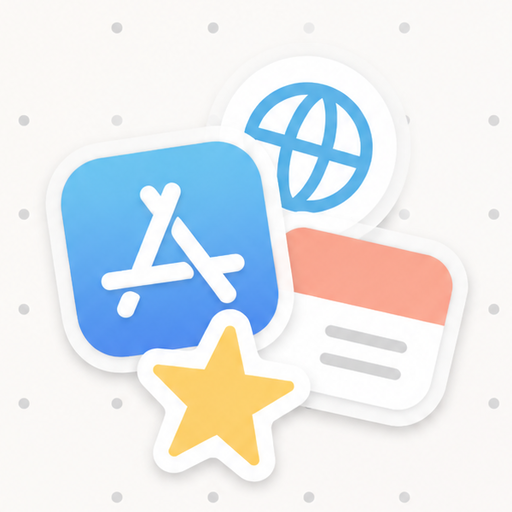

Highlighter Timeline
Paint blocks on a timeline to see where the hours went — or let AI paint them.
Comments alongside your notes, inside Obsidian. Select a passage, write a note, and the comment stays with the text — no AI needed. When you want one, @ a Claude Code / Codex session and its reply is written straight back into the file.
Most of this month went into the new-user onboarding flow. Two weeks after launch, activation is up 6 points on July, but week-two retention dropped 18%1 and we still don't know why.
Next month: finish the retention attribution first, then decide whether to add more onboarding steps.
Also, support flagged the copy on step three as ambiguous. A revised version shipped; we'll check the numbers next week.
0 comments· 1 unread
Not a knowledge base, not a chat window. Just "say something next to the text", made effortless.
Select text, right-click Add inline comment. The card sits in the right sidebar, level with the passage, and scrolls with it. The note only gets a soft highlight and a small counter.
Pick a Claude Code / Codex session, or Answer with a new session. The comment reaches it as a file; it reads the note and writes its reply back in place — or proposes a suggested edit that you accept with one click.
Replies from others (or AI) get a red dot, the file explorer shows a red count on the note, and the header reads "N comments · M unread". Mark as read when you're done, resolve when the thread is over. One switch turns it all off.
{==week-two retention dropped 18%==}{>>yyt|2026-09-05|question: Which table is this from? [@Session1](agent:3f9a12c0)<<}
A comment is one line of text, right next to the passage in the .md. No database, no sidecar files. Git can diff it, sync won't lose it, and it stays readable without the plugin.
Obsidian Settings → Community plugins → Browse, search Agent Comments.
Free · open source · the plugin itself never touches the network · desktop and mobile, Obsidian 1.8+ · works in editing and reading view · "Answer with a new session" is macOS only for now
In the note itself, right next to the commented sentence, as plain text. They travel with iCloud / Git / Obsidian Sync and are visible even where the plugin isn't installed.
Absolutely. Highlighting, commenting, replying, unread tracking — none of it needs a session or the network. @ is optional and stays out of the way if you don't use it.
The plugin itself never touches the network. An @ writes one file into a folder on your machine; the session runs in your own terminal. Whether a note leaves your computer is up to the AI tool you configured, not this plugin. The first @ asks you to install a hook once — it adds three entries to ~/.claude/settings.json and can be removed with one click.

Your saved pages laid out on a free-form canvas, used as a homepage.
Paint blocks on a timeline to see where the hours went — or let AI paint them.
What AI did for you today, written up as a timeline automatically.